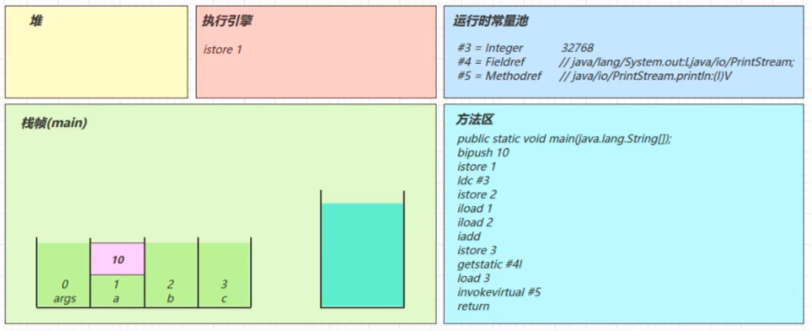

Java虚拟机
3 类加载与字节码技术
3.1.字节码文件结构
- 详见《深入理解Java虚拟机》
使用
javap -verbose命令分析个字节码文件时，将会分析该字节码文件的魔数，版本号、常量池、类信息，类的构造方法、类中的方法信息、类变量与成员变量等信息4个字节：魔数，固定值0xCAFEBABE
4个字节：版本信息
- 前两个字节：minor version (次版本号)
- 后两个字节表：major version (主版本号)
- 【00 00 00 34, 换算成十进制，表示次版本号为0，主版本号为52。文件的版本号为: 1.8.0】
- 向下兼容
2个字节：常量池项目数量
- 【0023 (35) 表示常量池有34项 即常量池数 - 1 (其中0暂时不使用，目的是满足某些常量池索引值的数据在特定情况下需要表达不引用任何个常量池的含义】
不定：常量池数组
一个Java类中定义的很多信息都是由常量池来维护和描述的
将常量池看作是Class文件的资源仓库，比如说Java类中定义的方法与变量信息，都是存储在常量池中。
常量池中主要存储两类
- 字面量：文本字符串，Java中声明为final的常量值
- 符号引用：类和接口的全局限定名，字段的名称和描述符，方法的名称和描述符等
常量池是一个数组，数组中不同的元素的类型、结构都是不同的，长度当然也就不同
后续种类进行了增加
常量池数组中每一项常量都是一个表结构，每项的第一个数据都是个
u1类型，代表当前常量属于哪种常量类型，JVM在解析常量池时，会根据这个类型来获取元素的具体类型。
2个字节：访问标识
- 用于标志识别类或者层次的访问信息
2个字节：类索引
2个字节：父类索引
2个字节：接口数量
不定：接口信息
2个字节：字段表长度
- 字段表用于描述类和接口中声明的变量。这里的字段包含了类级别变量以及实例变量，但是不包括方法内部声明的局部变量
不定：字段表信息
2个字节：方法表长度
不定：方法表信息
2个字节：属性表长度
不定：属性表信息
在Class文件、字段表、方法表都可以携带自己的属性表集合，以用于描述某些场景专有的信息
Code attribute的作用是保存该方法的结构
max_stack表示这个方法运行的任何时刻所能达到的操作数栈的最大深度
max_locals表示方法执行期间创建的局部变量的数目，包含用来表示传入的参数的局部变量
code_length表示该方法所包含的字节码的字节数以及具体的指令码，具体字节码即是该方法被调用时，虚拟机所执行的字节码
exception_table, 这里存放的是处理异常的信息，每个exception_table表项由start_pc end_pc handler_pc catch_type组成start_pc和end_pc表示在code数组中的从start_pc到end_pc处 [start_pc,end.pc) 的指令抛出的异常会由这个表项来处理handler_pc表示处理异常的代码的开始处catch_type表示会被处理的异常类型，它指向常量池里的一个异常类。当catch_type为
0时，表示处理所有的异常
属性表
LineNumberTable: 这个属性用来表示code数组中的字节码和Java代码行数之间的关系。这个属性可以用来在调试的时候定位代码执行的行数
- 每个变量/字段都有描述信息，描述信息主要的作用是描述字段的数据类型
- 对于基本数据类型只使用一个大写字母来表示，
B-byte C-char D-double F-float I-int J-long S-short Z-boolean V-void L-对象类型【为了压缩字节码文件的体积】- 对象类型则使用
字符L对象的全限定名称;来表示- 对于数组类型来说，每个维度使用个前置的
[来表示， 如int[]被记录为[I，String[][]被记录为[[Ljava/lang/String;- 每个方法都有描述信息，描述信息主要的作用是描述方法的参数列表(包括数量、类型与顺序)与返回值
- 按照先参数列表，后返回值的顺序来描述。参数列表按照参数的严格顺序放在组()之内， 如方法
String getRealnamebyIdAndNickname(int id, String name)的描述符的描述符为：(I, Ljava/lang/String;) Ljava/lang/String;
3.2.字节码的执行流程
- 原始java代码
1 | /** |
编译后的字节码文件
1
2
3
4
5
6
7
8
9
10
11
12
13
14
15
16
17
18
19
20
21
22
23
24
25
26
27
28
29
30
31
32
33
34
35
36
37
38
39
40
41
42
43
44
45
46
47
48
49
50
51
52
53
54
55
56
57
58
59
60
61
62
63
64
65
66
67
68
69
70
71
72
73
74
75
76
77
78
79
80
81
82
83
84
85
86
87
88
89
90
91
92
93
94F:\StudyDemo\multiThread\target\classes\top\carpenter>javap -verbose Demo3_1.class
Classfile /F:/StudyDemo/multiThread/target/classes/top/carpenter/Demo3_1.class
Last modified 2020-4-28; size 611 bytes
MD5 checksum a7d0991b2d0767b9ea3a2c9199b6adbf
Compiled from "Demo3_1.java"
public class top.carpenter.Demo3_1
minor version: 0
major version: 52
flags: ACC_PUBLIC, ACC_SUPER
Constant pool:
#1 = Methodref #7.#25 // java/lang/Object."<init>":()V
#2 = Class #26 // java/lang/Short
#3 = Integer 32768
#4 = Fieldref #27.#28 // java/lang/System.out:Ljava/io/PrintStream;
#5 = Methodref #29.#30 // java/io/PrintStream.println:(I)V
#6 = Class #31 // top/carpenter/Demo3_1
#7 = Class #32 // java/lang/Object
#8 = Utf8 <init>
#9 = Utf8 ()V
#10 = Utf8 Code
#11 = Utf8 LineNumberTable
#12 = Utf8 LocalVariableTable
#13 = Utf8 this
#14 = Utf8 Ltop/carpenter/Demo3_1;
#15 = Utf8 main
#16 = Utf8 ([Ljava/lang/String;)V
#17 = Utf8 args
#18 = Utf8 [Ljava/lang/String;
#19 = Utf8 a
#20 = Utf8 I
#21 = Utf8 b
#22 = Utf8 c
#23 = Utf8 SourceFile
#24 = Utf8 Demo3_1.java
#25 = NameAndType #8:#9 // "<init>":()V
#26 = Utf8 java/lang/Short
#27 = Class #33 // java/lang/System
#28 = NameAndType #34:#35 // out:Ljava/io/PrintStream;
#29 = Class #36 // java/io/PrintStream
#30 = NameAndType #37:#38 // println:(I)V
#31 = Utf8 top/carpenter/Demo3_1
#32 = Utf8 java/lang/Object
#33 = Utf8 java/lang/System
#34 = Utf8 out
#35 = Utf8 Ljava/io/PrintStream;
#36 = Utf8 java/io/PrintStream
#37 = Utf8 println
#38 = Utf8 (I)V
{
public top.carpenter.Demo3_1();
descriptor: ()V
flags: ACC_PUBLIC
Code:
stack=1, locals=1, args_size=1
0: aload_0
1: invokespecial #1 // Method java/lang/Object."<init>":()V
4: return
LineNumberTable:
line 3: 0
LocalVariableTable:
Start Length Slot Name Signature
0 5 0 this Ltop/carpenter/Demo3_1;
public static void main(java.lang.String[]);
descriptor: ([Ljava/lang/String;)V
flags: ACC_PUBLIC, ACC_STATIC
Code:
stack=2, locals=4, args_size=1
0: bipush 10
2: istore_1
3: ldc #3 // int 32768
5: istore_2
6: iload_1
7: iload_2
8: iadd
9: istore_3
10: getstatic #4 // Field java/lang/System.out:Ljava/io/PrintStream;
13: iload_3
14: invokevirtual #5 // Method java/io/PrintStream.println:(I)V
17: return
LineNumberTable:
line 5: 0
line 6: 3
line 7: 6
line 8: 10
line 9: 17
LocalVariableTable:
Start Length Slot Name Signature
0 18 0 args [Ljava/lang/String;
3 15 1 a I
6 12 2 b I
10 8 3 c I
}
SourceFile: "Demo3_1.java"常量池载入运行时常量池
此时仅仅示意 运行时常量池属于方法区 并且没有列出所有项
方法的字节码会放入方法区
main线程开始运行，分配栈帧内存bipush 10将一个byte压入操作数栈(长度会补齐4个字节)istore 1将操作数栈顶数据弹出，存入局部变量表的slot 1
ldc #3从常量池加载#3数据到操作数栈- 32768 = Short.MAX_VALUE + 1实际是在编译期间计算好的
istore 2
*
iload 1*iload2iaddistore 3getstatic #4iload 3invokevirtual #5- 找到常量池#5项
- 定位到方法区java/io/PrintStream. println:(I)V方法
- 生成新的栈帧(分配locals、stack等)
- 传递参数，执行新栈帧中的字节码
执行完毕,弹出栈帧，清除main操作数栈内容

完成main方法调用，弹出main栈帧，程序结束
3.3.常用字节码指令
- 详见《深入理解Java虚拟机》
- ldc表示将int，float或是String类 型的常量值从常量池中推送至栈顶
- bipush表示将单字节 (-128 - 127) 的常量值推送至栈顶
- sipush表示将一个短整型常量值(-32768 - 32767)推送至栈顶
- iconst_1表示将int类型1推送至栈顶(iconst_m1 - iconst_5)
- anewarray:表示创建一个引用类型的(如类、接口、数组)数组，并将其引用值压入栈顶
- newarray;表示创建一个指定的原始类型(如int、 float. char等)的数组，并将其引用值压入栈顶
3.3.1构造方法
<CLINIT>()V方法
编译器会按从上至下的顺序，收集所有static静态代码块和静态成员赋值的代码，合并为一个特殊的方法
<cinit>()V1
2
3
4
5
6
7
8
9static int a = 10;
static {
a = 20;
}
static {
a = 30;
}1
2
3
4
5
6
7
8
9
10
11
12
13
14
15
16
17
18
19
20
21
22
23
24
25
26
27
28
29
30
31
32
33
34
35
36
37
38
39
40
41
42
43
44
45
46
47
48
49
50
51
52
53
54
55
56
57
58
59
60
61
62
63
64
65
66
67Classfile /F:/StudyDemo/multiThread/target/classes/top/carpenter/CINIT.class
Last modified 2020-4-28; size 371 bytes
MD5 checksum 53d1de3bf6512166904597cdfa925778
Compiled from "CINIT.java"
public class top.carpenter.CINIT
minor version: 0
major version: 52
flags: ACC_PUBLIC, ACC_SUPER
Constant pool:
#1 = Methodref #4.#17 // java/lang/Object."<init>":()V
#2 = Fieldref #3.#18 // top/carpenter/CINIT.i:I
#3 = Class #19 // top/carpenter/CINIT
#4 = Class #20 // java/lang/Object
#5 = Utf8 i
#6 = Utf8 I
#7 = Utf8 <init>
#8 = Utf8 ()V
#9 = Utf8 Code
#10 = Utf8 LineNumberTable
#11 = Utf8 LocalVariableTable
#12 = Utf8 this
#13 = Utf8 Ltop/carpenter/CINIT;
#14 = Utf8 <clinit>
#15 = Utf8 SourceFile
#16 = Utf8 CINIT.java
#17 = NameAndType #7:#8 // "<init>":()V
#18 = NameAndType #5:#6 // i:I
#19 = Utf8 top/carpenter/CINIT
#20 = Utf8 java/lang/Object
{
static int i;
descriptor: I
flags: ACC_STATIC
public top.carpenter.CINIT();
descriptor: ()V
flags: ACC_PUBLIC
Code:
stack=1, locals=1, args_size=1
0: aload_0
1: invokespecial #1 // Method java/lang/Object."<init>":()V
4: return
LineNumberTable:
line 3: 0
LocalVariableTable:
Start Length Slot Name Signature
0 5 0 this Ltop/carpenter/CINIT;
static {};
descriptor: ()V
flags: ACC_STATIC
Code:
stack=1, locals=0, args_size=0
0: bipush 10
2: putstatic #2 // Field i:I
5: bipush 20
7: putstatic #2 // Field i:I
10: bipush 30
12: putstatic #2 // Field i:I
15: return
LineNumberTable:
line 4: 0
line 6: 5
line 9: 10
line 10: 15
}
SourceFile: "CINIT.java"<clinit>()V方法会在类加载的初始化阶段被调用
<INIT>()V方法
编译器会按从上至下的顺序，收集所有{}代码块和成员变量赋值的代码，形成新的构造方法，但原始构造方法内的代码总是在最后
1
2
3
4
5
6
7
8
9
10
11
12
13
14
15
16
17
18
19
20
21package top.carpenter;
public class INIT {
private String a = "s1";
{
b = 20;
}
private int b = 10;
{
a = "s2";
}
public INIT(String a, int b) {
this.a = a;
this.b = b;
}
public static void main(String[] args) {
INIT d = new INIT("s3", 30);
System.out.println(d.a);
System.out.println(d.b);
}
}1
2
3
4
5
6
7
8
9
10
11
12
13
14
15
16
17
18
19
20
21
22
23
24
25
26
27
28
29
30
31
32
33
34
35
36
37
38
39
40
41
42
43
44
45
46
47
48
49
50
51
52
53
54
55
56
57
58
59
60
61
62
63
64
65
66
67
68
69
70
71
72
73
74
75
76
77
78
79
80
81
82
83
84
85
86
87
88
89
90
91
92
93
94
95
96
97
98
99
100
101
102
103
104
105
106
107
108
109
110
111
112
113
114
115
116
117
118
119
120
121
122
123
124
125
126
127
128
129
130
131
132
133
134Classfile /F:/StudyDemo/multiThread/target/classes/top/carpenter/INIT.class
Last modified 2020-4-28; size 799 bytes
MD5 checksum 7bb1a6f02baecfedf42f39670549c6d2
Compiled from "INIT.java"
public class top.carpenter.INIT
minor version: 0
major version: 52
flags: ACC_PUBLIC, ACC_SUPER
Constant pool:
#1 = Methodref #12.#31 // java/lang/Object."<init>":()V
#2 = String #32 // s1
#3 = Fieldref #6.#33 // top/carpenter/INIT.a:Ljava/lang/String;
#4 = Fieldref #6.#34 // top/carpenter/INIT.b:I
#5 = String #35 // s2
#6 = Class #36 // top/carpenter/INIT
#7 = String #37 // s3
#8 = Methodref #6.#38 // top/carpenter/INIT."<init>":(Ljava/lang/String;I)V
#9 = Fieldref #39.#40 // java/lang/System.out:Ljava/io/PrintStream;
#10 = Methodref #41.#42 // java/io/PrintStream.println:(Ljava/lang/String;)V
#11 = Methodref #41.#43 // java/io/PrintStream.println:(I)V
#12 = Class #44 // java/lang/Object
#13 = Utf8 a
#14 = Utf8 Ljava/lang/String;
#15 = Utf8 b
#16 = Utf8 I
#17 = Utf8 <init>
#18 = Utf8 (Ljava/lang/String;I)V
#19 = Utf8 Code
#20 = Utf8 LineNumberTable
#21 = Utf8 LocalVariableTable
#22 = Utf8 this
#23 = Utf8 Ltop/carpenter/INIT;
#24 = Utf8 main
#25 = Utf8 ([Ljava/lang/String;)V
#26 = Utf8 args
#27 = Utf8 [Ljava/lang/String;
#28 = Utf8 d
#29 = Utf8 SourceFile
#30 = Utf8 INIT.java
#31 = NameAndType #17:#45 // "<init>":()V
#32 = Utf8 s1
#33 = NameAndType #13:#14 // a:Ljava/lang/String;
#34 = NameAndType #15:#16 // b:I
#35 = Utf8 s2
#36 = Utf8 top/carpenter/INIT
#37 = Utf8 s3
#38 = NameAndType #17:#18 // "<init>":(Ljava/lang/String;I)V
#39 = Class #46 // java/lang/System
#40 = NameAndType #47:#48 // out:Ljava/io/PrintStream;
#41 = Class #49 // java/io/PrintStream
#42 = NameAndType #50:#51 // println:(Ljava/lang/String;)V
#43 = NameAndType #50:#52 // println:(I)V
#44 = Utf8 java/lang/Object
#45 = Utf8 ()V
#46 = Utf8 java/lang/System
#47 = Utf8 out
#48 = Utf8 Ljava/io/PrintStream;
#49 = Utf8 java/io/PrintStream
#50 = Utf8 println
#51 = Utf8 (Ljava/lang/String;)V
#52 = Utf8 (I)V
{
public top.carpenter.INIT(java.lang.String, int);
descriptor: (Ljava/lang/String;I)V
flags: ACC_PUBLIC
Code:
stack=2, locals=3, args_size=3
0: aload_0
1: invokespecial #1 // Method java/lang/Object."<init>":()V
4: aload_0
5: ldc #2 // String s1
7: putfield #3 // Field a:Ljava/lang/String;
10: aload_0
11: bipush 20
13: putfield #4 // Field b:I
16: aload_0
17: bipush 10
19: putfield #4 // Field b:I
22: aload_0
23: ldc #5 // String s2
25: putfield #3 // Field a:Ljava/lang/String;
28: aload_0
29: aload_1
30: putfield #3 // Field a:Ljava/lang/String;
33: aload_0
34: iload_2
35: putfield #4 // Field b:I
38: return
LineNumberTable:
line 16: 0
line 4: 4
line 7: 10
line 10: 16
line 13: 22
line 17: 28
line 18: 33
line 19: 38
LocalVariableTable:
Start Length Slot Name Signature
0 39 0 this Ltop/carpenter/INIT;
0 39 1 a Ljava/lang/String;
0 39 2 b I
public static void main(java.lang.String[]);
descriptor: ([Ljava/lang/String;)V
flags: ACC_PUBLIC, ACC_STATIC
Code:
stack=4, locals=2, args_size=1
0: new #6 // class top/carpenter/INIT
3: dup
4: ldc #7 // String s3
6: bipush 30
8: invokespecial #8 // Method "<init>":(Ljava/lang/String;I)V
11: astore_1
12: getstatic #9 // Field java/lang/System.out:Ljava/io/PrintStream;
15: aload_1
16: getfield #3 // Field a:Ljava/lang/String;
19: invokevirtual #10 // Method java/io/PrintStream.println:(Ljava/lang/String;)V
22: getstatic #9 // Field java/lang/System.out:Ljava/io/PrintStream;
25: aload_1
26: getfield #4 // Field b:I
29: invokevirtual #11 // Method java/io/PrintStream.println:(I)V
32: return
LineNumberTable:
line 22: 0
line 23: 12
line 24: 22
line 26: 32
LocalVariableTable:
Start Length Slot Name Signature
0 33 0 args [Ljava/lang/String;
12 21 1 d Ltop/carpenter/INIT;
}
SourceFile: "INIT.java"
3.3.2方法调用
- 对于Java类中的每一个实例方法(非static方法) ，其在编译后所生成的字节码当中，方法参数的数量总是会比源代码中方法参数的数量多一个(this)，位于方法的第一个参数位置处
- 这样，我们就可以在Java的实例方法中使用this来去访问当前对象的属性以及其他方法。
- 这个操作是在编译期间完成的，即由javac编译器在编译的时候，将对this的访问转化为对一个普通实例方法参数的访问，接下来在运行期间，由JVM在调用实例方法时，自动向实例方法传入该this参数。所以，在实例方法的局部变量表中，至少会有一个指向当前对象的局部变量。
1 | public class Function { |
1 | public static void main(java.lang.String[]); |
- 方法调用字节码指令存在5种情况
- 静态绑定：在字节码生成的时候就知道执行的是哪个类哪个方法了
invokespecial调用自己的私有方法、构造方法(<init>) 以及父类的方法。invokestatic调用static方法
- 动态绑定：在运行期确定的
invokeinterface调用接口中的方法，决定到底调用实现该接口的哪个对象的特定方法- 方法区的接口方法表的数据结构(interface method table, itable)有关
invokevirtual都属于动态绑定，调用虚方法- 方法区的虚方法表的数据结构(virtual method table, vtable)有关
invokedynamic动态调用方法
- 性能：接口调用，多态调用，直接调用的性能可以显而易见，invokeinterface最慢，invokevitual中，invokespeical最快
- 静态绑定：在字节码生成的时候就知道执行的是哪个类哪个方法了
3.3.3多态调用-虚拟函数表Vtable
包含该类所有函数自有函数（除了static, final，私有方法）和父类的函数虚拟表。
结构：
1
vtableEntry | vtableEntry |vtableEntry...
是以vtableEntry 结构体的数组顺序结构，在每个entry 中保存了所调用的函数的指针
举个例子：
1
2
3
4
5
6
7
8
9class A {
public void A(){}
public void A(String a){}
}
class B extends A{
public void A(){}
public void B(){}
}对于B的vtale: 就是 {B.A}{A.A(String)}{B.B}
如何初始化——当类初始化的时候，复制父类的虚拟表， 然后根据自己的顺序替换或者增加虚拟表的内容，
- 如果overwrite函数,(方法名字，参数签名 完全一样)，也就是替换虚拟表相同顺序的内容
- 如果overload函数（方法名字，参数签名完全不一样）/或者自己写的函数，顺序添加到虚拟表尾部
- 特殊的mirandas，该类的实现的接口函数里的方法列表，如果函数名字和参数签名一样的话，认为是同一个，顺序的添加到虚拟表的最后
在链接时 生成虚方法表
- 当执行
invokevirtual指令时，字节码指令的多态查找流程- 先通过栈帧中操作数栈顶的对象引用找到对象
- 分析对象头，找到对象的实际Class
- Class结构中有虚方法表vtable，它在类加载的链接阶段就已经根据方法的重写规则生成好了
- 查表得到方法的具体地址
- 执行方法的字节码
3.2.2静态分配
1 | public class Load9 { |
3.3异常处理
3.3.1try-catch
- 方法表信息中的方法的Code属性多出来一个
Exception table的结构，[rom, to)是前闭后开的检测范围，一旦这个范围内的字节码 - 执行出现异常，则通过type匹配异常类型
- 如果一致, 进入target所指示行号8行的字节码指令astore_2是将异常对象引用存入局部变量表的slot2位置
1 | package top.carpenter; |
1 | public static void main(java.lang.String[]); |
3.3.2finally
可以看到finally中的代码被复制了3份，分别放入try流程，catch 流程以及catch 剩余的异常类型流程
3.3.2.1finally出现了return
- 由于finally中的
ireturn被插入了所有可能的流程，因此返回结果肯定以finally的为准 - 字节码中第2行，return执行之前要暂存一下
- 跟上例中的
finally相比，发现没有athrow了，这告诉我们：如果在finally中出现了return，会吞掉异常
1 | public static void main(String[] args) { |
3.3.2.2finally对返回值的影响
1 | public static void main(String[] args) { |
3.3.3异常
如果异常采用
throws NullPointerException抛出，则不会出现在Code属性表集合中，而是在与Code同级，不属于方法体的内容，1
2
3
4
5
6
7
8
9public static void main(String[] args) throws NullPointerException {
int i = 0;
try{
i = 20;
}catch (Exception e)
{
i =12 ;
}
}
3.4synchronized锁
1 | public static void main(String[] args) { |
方法级别的synchronized不会在字节码指令中有所体现 会在访问标志中区别
4.编译期处理
- 所谓的语法糖，其实就是指java编译器把
*. java源码编译为*. class字节码的过程中，自动生成和转换的一些代码，主要是为了减轻程序员的负担
编译器转换的结果直接就是class字节码，以下只是为了便于阅读，给出了几乎等价的java源码方式，并不是编译器还会转换出中间的java源码,切记。
4.1默认构造器
4.2自动拆装箱
4.3泛型集合存取
Java在编译泛型代码后会执行泛型擦除的动作，即泛型信息在编译为字节码之后就丢失了，实际的类型都当做了Object类型来处理:
1
2
3
4
5
6
7public class Candy3 {
public static void main(String[] args) {
List<Integer> list = new ArrayList<>();
list.add(10); //实际调用的是List.add(Object e)
Integer x = list.get(0); //实际调用的是Object obj = List.get(int index);
}
}
4.4可变参数
1 | public class Candy4 { |
- 可变参数
String... args其实是一个String[] args，从代码中的赋值语句中就可以看出来
注意：如果调用了foo()则等价代码为foo(new String[]{})， 创建了一个空的数组，而不会传递null进去
4.5foreach循环
1 | public class Candy5_1 { |
会被编译器转换为
1
2
3
4
5
6
7
8
9public class Candy5_1 {
public static void main(String[] args) {
int[] array = new int[]{1, 2, 3, 4, 5};
for(int i = 0; i < array.length; ++i) {
int e = array[i];
System.out.println(e);
}
}
}foreach循环能够配合数组，以及所有实现了Iterable 接口的集合类一起使用， 其中Iterable 用来获取集合的迭代器(Iterator)
4.6switch字符串
- 从JDK 7开始，通过转换利用原生switch，作用于字符串和枚举类
1 | public class Candy6_1 { |
注意：switch配合String和枚举使用时，变量不能为null
会被编译器转换为:
执行了两遍switch
- 第一遍是根据字符串的
hashCode【提高效率】和equals【防止hashCode冲突】将字符串的转换为相应byte类型 - 第二遍才是利用
byte执行进行比较
- 第一遍是根据字符串的
4.7switch枚举类
1 | enum Sex { |
4.8枚举类
4.9try-with-resources
JDK 7开始新增了对需要关闭的资源处理的特殊语法
try-with-resources1
2
3
4
5try(资源变量=创建资源对象){
...
}
catch() {
}其中资源对象需要实现
AutoCloseable接口，例如InputStreamOutputStreamConnectionStatement``ResultSet等接口都实现了AutoCloseable, 使用try-with-resources可以不用写finally语句块,编译器会帮助生成关闭资源代码1
2
3
4
5
6
7
8
9public class Candy_9 {
public static void main(String[] args) {
try(InputStream is = new FileInputStream("d:\\1.txt")) {
System.out.println(is);
} catch (IOException e) {
e.printStackTrace();
}
}
}为什么要设计一个
addSuppressed(Throwable e) (添加被压制异常) 的方法呢?是为了防止异常信息的丢失
(想想try-with-resources生成的fianlly中如果抛出了异常) :1
2
3
4
5
6
7
8
9
10
11
12
13
14public class Test6 {
public static void main(String[] args) {
try (MyResource resource = new MyResource()) {
int i = 1/0;
} catch (Exception e) {
e.printStackTrace();
}
}
}
class MyResource implements AutoCloseable {
public void close() throws Exception {
throw new Exception("close 异常");
}
}输出：
4.10方法重写时的桥接方法
方法重写时对返回值分两种情况
- 父子类的返回值完全一致
- 子类返回值可以是父类返回值的子类(
1
2
3
4
5
6
7
8
9
10
11
12class A {
public Number m() {
return 1;
}
}
class B extends A {
//子类m方法的返回值是Integer是父类m方法返回值Number的子类
public Integer m() {
return 2;
}
}对于子类，java 编译器会做如下处理:
1
2
3
4
5
6
7
8
9
10class B extends A {
public Integer m() {
return 2;
}
//此方法才是真正重写了父类public Number m()方法
public synthetic bridge Number m() {
//调用public Integer m()
return m( );
}
}其中桥接方法比较特殊，仅对java虚拟机可见，并且与原来的
public Integer m()没有命名冲突，可以用下面反射代码来验证:1
2
3for (Method m : B.class.getDeclaredMethods()) {
System. out. println(m);
}会输出:
1
2public java.lang.Integer test.candy.B.m()
public java.lang.Number test.candy.B.m()
4.11内部类
匿名内部类为例
1
2
3
4
5
6
7
8
9
10public class Candy_11 {
public static void main(String[] args) {
Runnable runnable = new Runnable() {
public void run() {
System.out.println("ok");
}
}
}
}- 转换后代码:
1
2
3
4
5
6
7
8
9
10
11
12//额外生成的类
final class Candy11$1 implements Runnable {
Candy11$1() {
public void run() {
System.out.println("ok");
}
}
public class Candy11 {
public static void main(String[] args) {
Runnable runnable = new Candy11$1();
}
}引用局部变量的匿名内部类，源代码:
1
2
3
4
5
6
7
8
9public class Candy11 {
public static void test(final int x) {
Runnable runnable = new Runnable() {
public void run() {
System.out.println("ok:" + x);
};
}
}- 转换后代码:
1
2
3
4
5
6
7
8
9
10
11
12
13
14
15//额外生成的类
final class Candy11$1 implements Runnable {
int val$x;
Candy11$1(int x) {
this.val$x = x;
}
public void run() {
System.out.println("ok:" + this.val$x);
}
}
public class Candy11 {
public static void test(final int x) {
Runnable runnable = new Candy11$1(x);
}
}解释了为什么匿名内部类引用局部变量时，局部变量必须是final的
- 因为在创建Candy11$1对象时，将x的值赋值给了Candy11$1对象的val$x属性，所以x不应该再发生变化了，如果变化,那么valx属性没有机会再跟着一起变化
原文作者: 掘金木匠
原文链接: http://goldcarpenter.github.io/2019/07/18/JVM_Part3/
版权声明: 转载请注明出处(必须保留作者署名及链接)